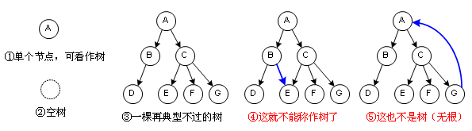
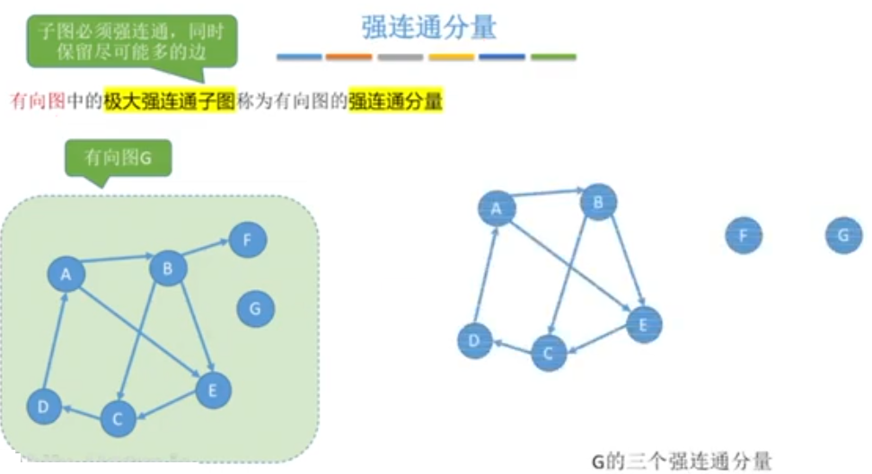

图的基本概念和几种特殊的图
之前学过的树逻辑结构是这样的：

图逻辑结构是这样的:
 图逻辑结构的应用:
图逻辑结构的应用:
微信好友关系和微博粉丝关系都可以用简单图完成，不需要处理自己添加自己为好友/粉丝的情况
思考：如何判断一个人是否是交友达人/微博大V?
通过计算某个结点的边数/弧尾数
那么，我们可以通过"度"这个术语表示上面的概念:
 顶点-顶点的关系描述：
顶点-顶点的关系描述：

连通图和强连通图性质：
子图和生成子图

连通分量

强连通分量

无向图的生成树
生成森林:
1 先得到连通分量
2 再得到每个连通分量的生成树

生成树的应用场景，下列图中每个结点代表一个地点，修路使得每个地点连通，且成本最小：

如果每条路的成本不一样呢？这个问题涉及到以下这些概念:
边的权、带权图/网
特殊的图：有向完全图、无向完全图、稀疏图、稠密图、树


我是分割线，至于我为什么这么高，是为了告诉你，前后的内容重点不一样
图的存储(图的物理结构，也就是图在内存中是如何储存的):
1 邻接矩阵
2 邻接表
3 十字链表
4 邻接多重表
邻接矩阵法(点击此处下载excel演示文件)
邻接矩阵法存储无向图和有向图(不带权)

邻接矩阵法存储带权图
还记得矩阵的压缩存储吗？上面的矩阵可以进行压缩存储吗？
两个矩阵的乘法还记得吗?
如果把图g的邻接矩阵a进行平方操作,也就是a²=a*a ，结果是什么含义呢？
看下图【邻接矩阵法的性质】:
以上关于邻接矩阵的性质，严谨的数学证明可以参考《离散数学 》中的图论
思考：如何通过邻接矩阵求：
1 无向图中每个结点的度
2 有向图中每个结点的出度、入度和度
图的物理存储之邻接表法 ：
邻接矩阵的缺点 ：空间复杂度高，顶点数量为n的图，需要用一个一维数组存储结点，用一个二维矩阵来存储路径，空间复杂度n² 。
邻接表法表示无向图时，有冗余：A->B 和 B->A是同一条边，但是存储了两次。
思考：如何通过邻接表法求无向图结点的度、图的度;有向图的出度、入度 (求入度比较麻烦，需要遍历整个邻接表，这是邻接表法的缺点)等
邻接矩阵和邻接表对比
树的遍历:
1 广度优先遍历 BFS
找到与当前结点相连的所有结点，然后再继续下一层。
2 深度优先遍历 DFS


广度优先遍历
思考：上图中，遍历到1、6时，如果继续遍历，会发现6的相邻结点有2、3、7，但是2已经遍历过了，如何处理？
可以在代码中，给已经遍历过的结点加一个标记 ，比如 boolean visited=true;
广度优先遍历序列:
由于图的物理存储可以采用邻接矩阵和邻接表等方式，并且邻接表的存储顺序不唯一 ，所以
图的广度优先遍历序列的具有可变性:
图的深度优先遍历:
非连通图[见下图]该如何遍历呢?
问题：旅游需要经过武汉、西安、北京、南京、香港、台北、呼和浩特...，如何规划行程，使得成本(经济、时间、路程)最小，又能去到所有城市。
看如下问题：如何修路最节省成本
可能的方案:
那如何得到代价最小的修路方案呢? Prim算法和Kruskal算法。
首先需要注意：
只有连通图才能产生生成树，非连通图只能产生生成森林。比如:
1 Prim算法(普利姆算法) :从点找最小边
2 Kruskal(克鲁斯卡尔算法) :从最小边找点
最小生成树(最小代价树)
问题：旅游需要从武汉到纽约，如何规划行程，使得成本最低。
1 BFS(广度优先算法)求无权图的单源最短路径
2 Dijkstra迪杰斯特拉算法 求带权图、无权图的单源最短路径
迪杰斯特拉算法流程图:
最短路径问题
带权图，但是权值有负数，迪杰斯特拉算法不适用
带负权的带权图，场景:跑毒